Open-source light meter
A pocket light meter you print at home. An AMOLED face, a translucent dome on top, a knurled dial and a red key. Reflected and incident light, flash, colour temperature and the zone system.
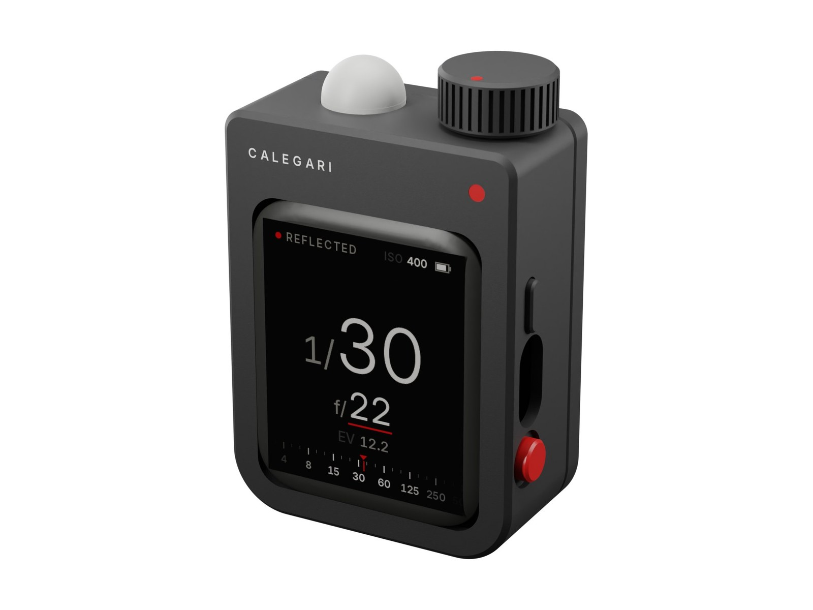
Why
The Calegari View 2 wants a meter that is quick, quiet and exact, and that speaks the language of a lens in a Copal shutter: whole stops of time, thirds of aperture, long exposures on slow film, a flash now and then.
The meters that do all of that are big or expensive. This one is a small black block that sits in the hand like a first iPod shuffle, with the manners of a Leica: one red dot, one red key, a dial you turn without looking. Its shape comes from the object, not from the board inside it.
Seven printed parts, three bought boards, a battery and seven wires. No screws, no glue.
Specifications
Gallery
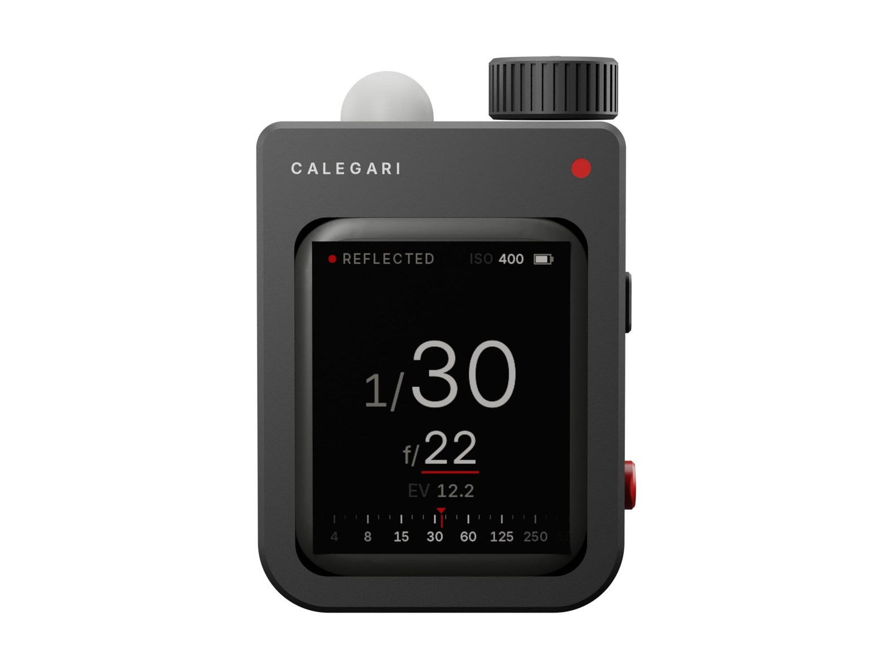
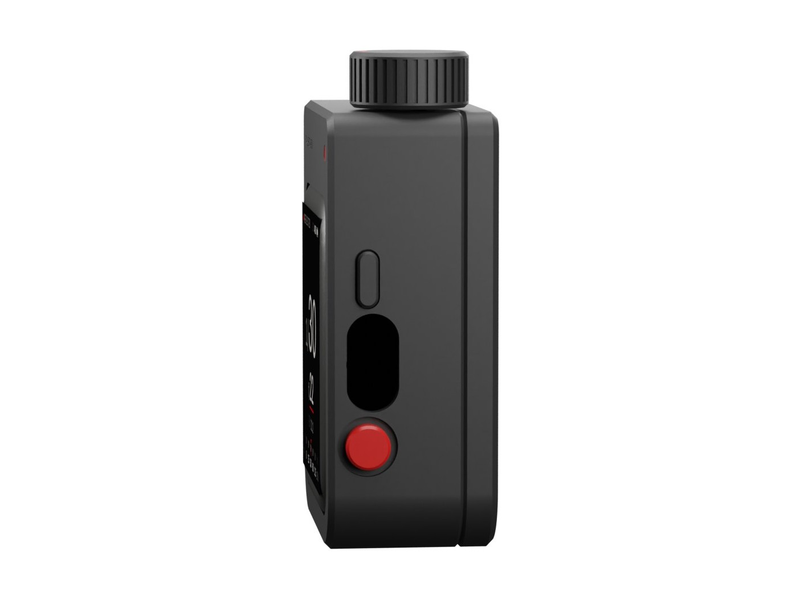
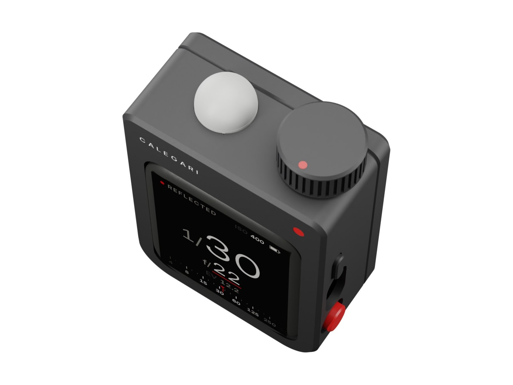
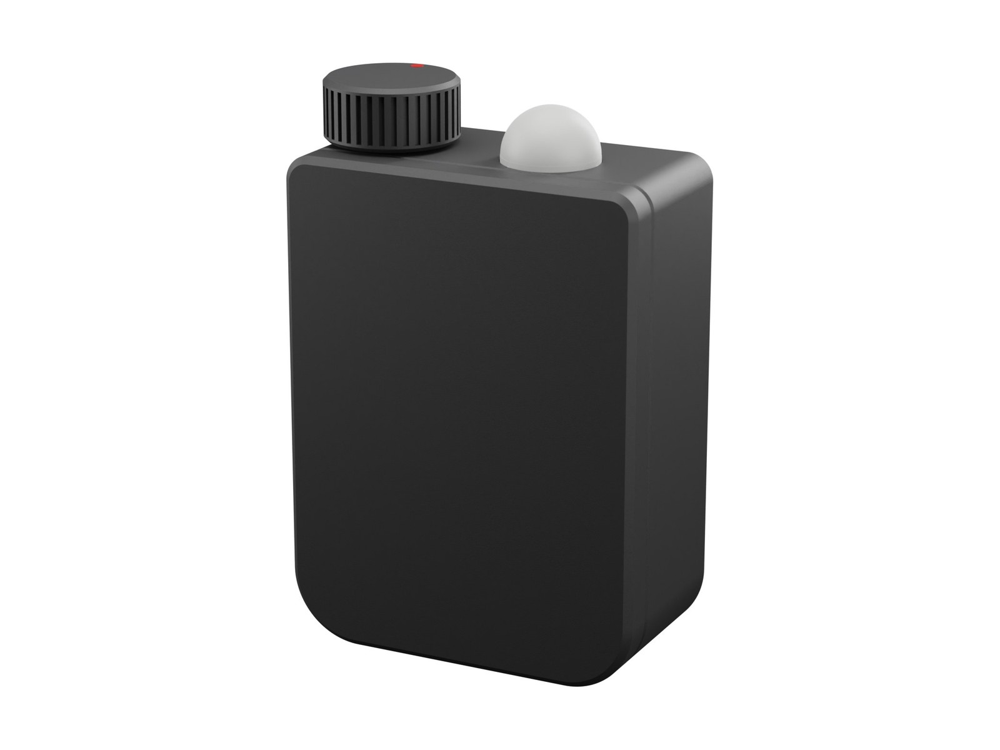
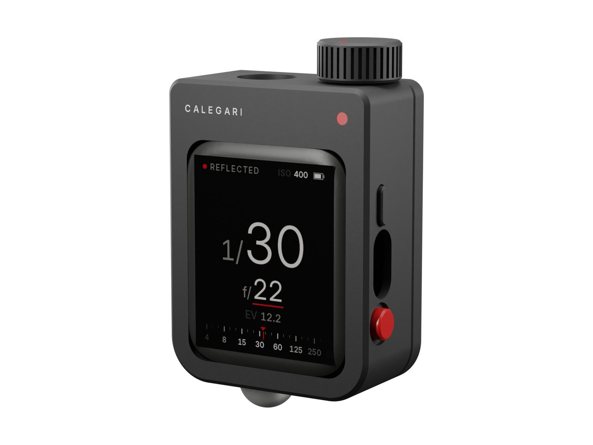
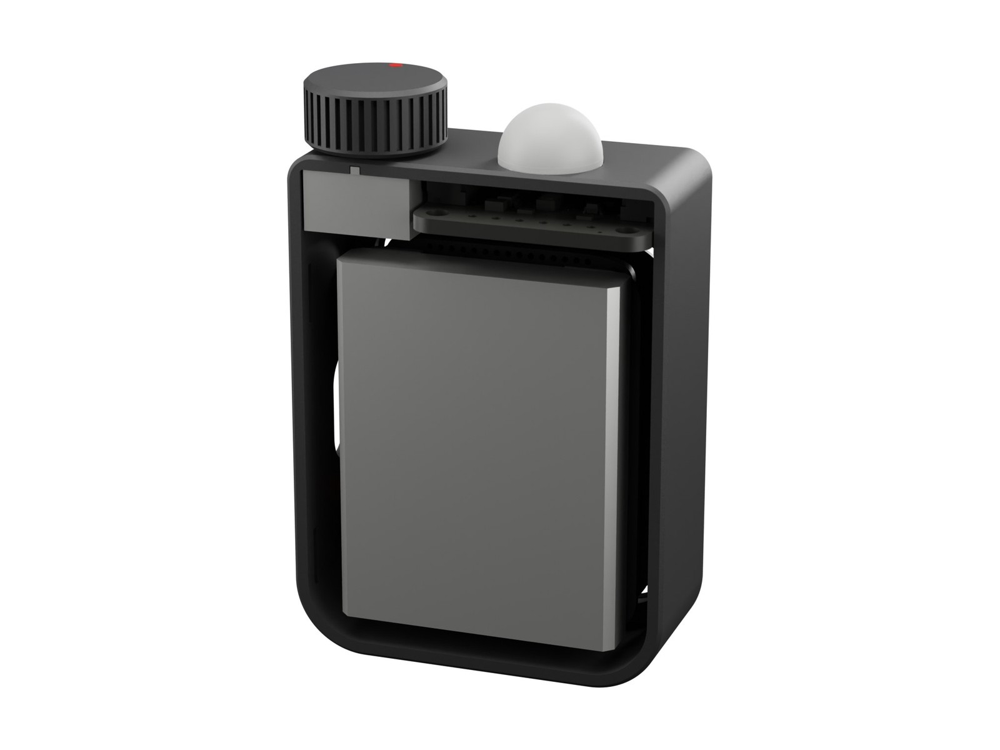
Screens
The biggest thing on the screen is always the answer, set like the numbers on a shutter dial. The value the dial changes has a red line under it. At the foot a scale slides to the answer like a real dial. Every screen here is drawn by the firmware's own code.
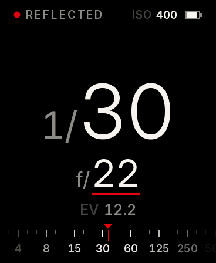
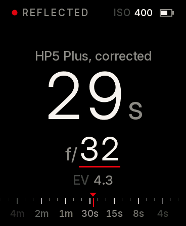
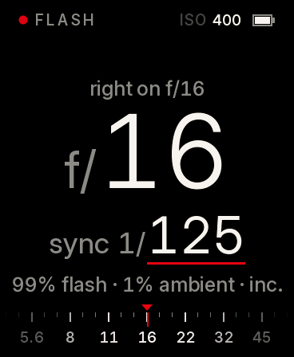
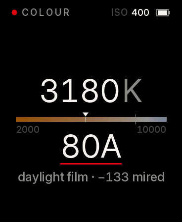
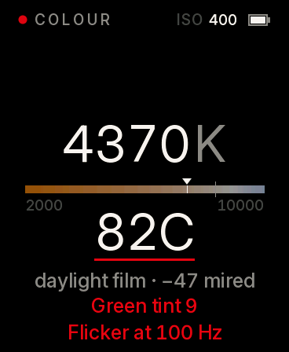
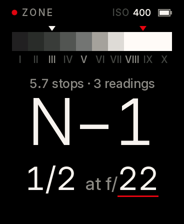
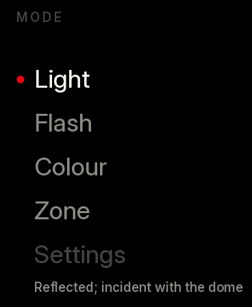
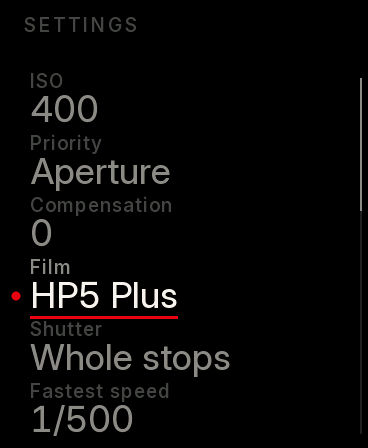
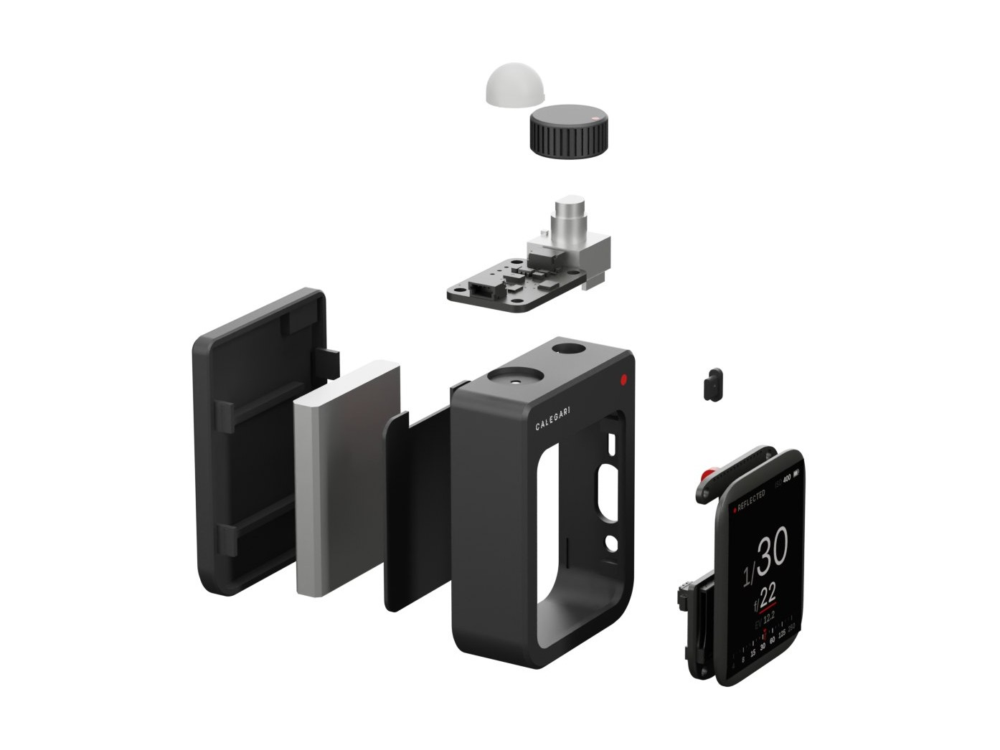
How it works
Build
Three plates, no supports: every curve lies in the plane of the bed, every rising edge is vertical or a 45° chamfer. Solder seven wires, drop the screen in, snap the lid on, load the firmware with one command.
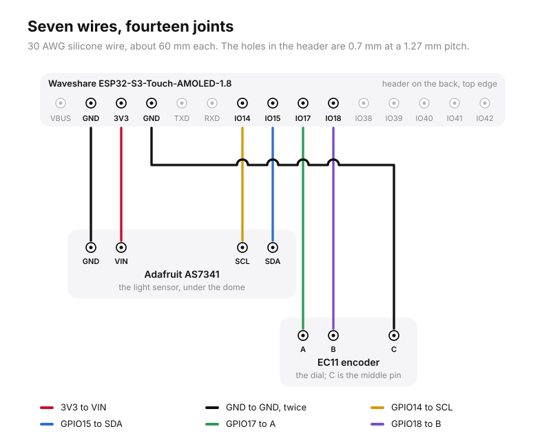
Four to the sensor, three to the encoder, all to one header on the back of the screen board.
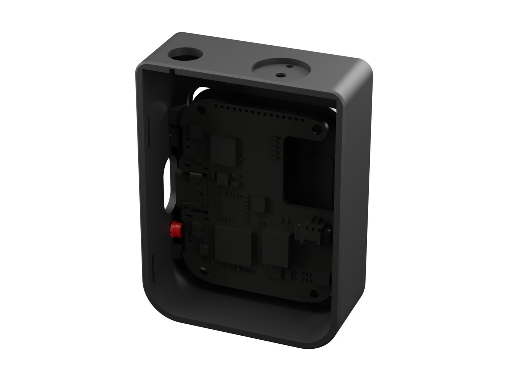
Face first into the window, onto the ribs, its buttons behind the two keys.
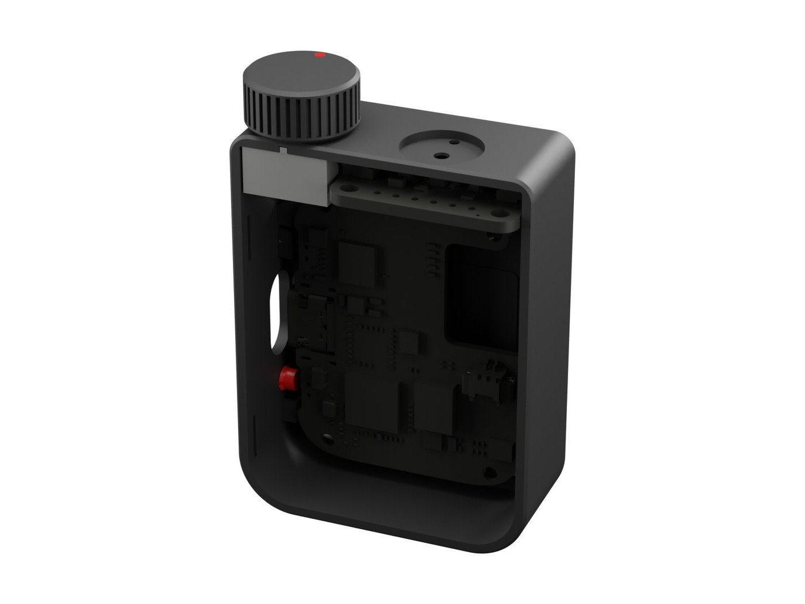
The sensor into its groove under the port, the encoder threaded into the top.
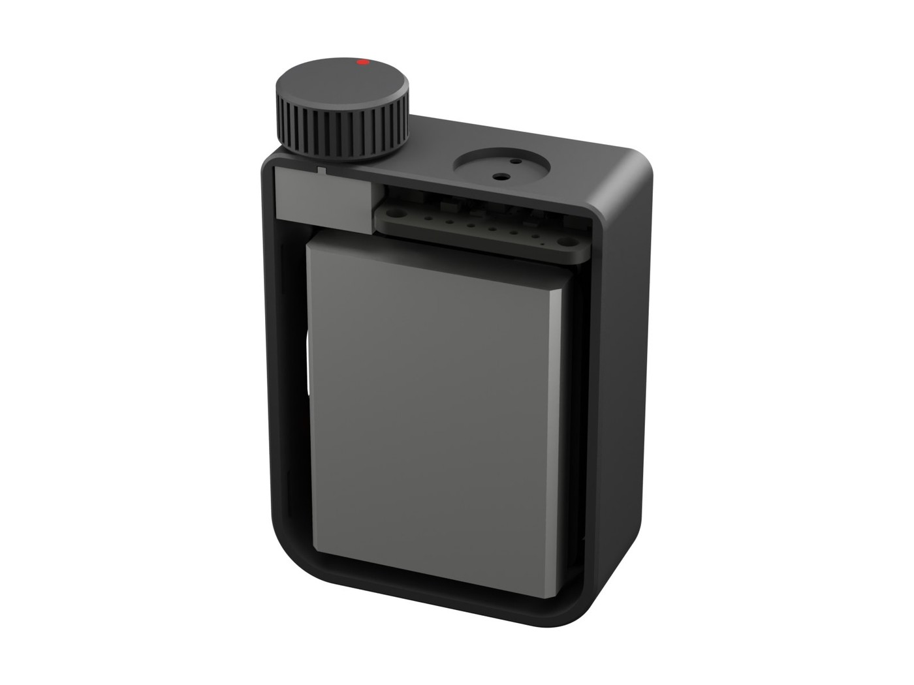
The tray, the cell, four snaps. The dial and the dome press on.
Checked before it is printed
interferences between any two parts, bought or printed
supports needed, on any of the three plates
half angle of reflected light, set by the rim of the port
screens, rendered on a computer by the firmware's own code
The first meter has not been put together yet. Two numbers in the firmware come from the datasheets and are confirmed with the first build: the calibration guide says how.
Files